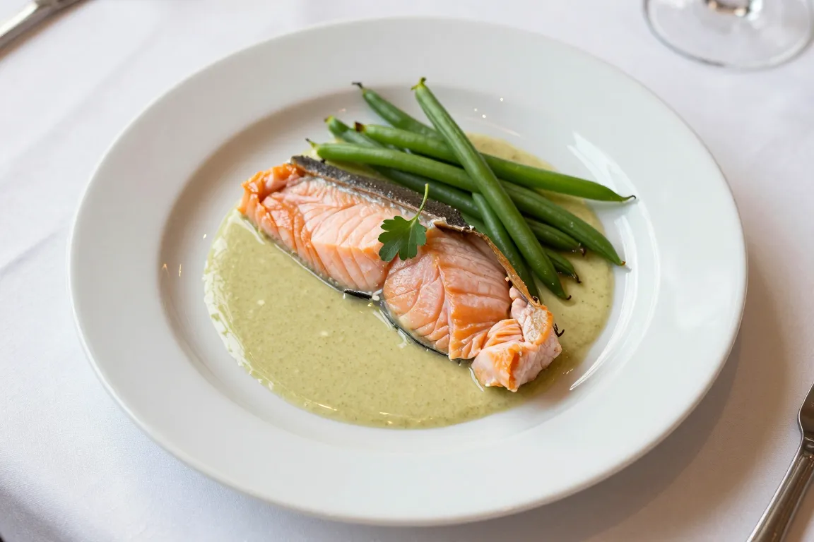

кухня · 1965–1990 · также: Новая французская кухня, Кухня рынка
Лёгкая французская ресторанная кухня. Шеф покупает свежие продукты на рынке, недолго готовит рыбу и овощи, делает соусы без муки и выкладывает каждое блюдо на кухне. Го и Мийо дали ей десять правил в 1973 году.

Главная идея
Снимите с Эскофье тяжесть: свежие рыночные продукты, короткая готовка и соус без муки позволяют вкусу продукта вести блюдо.
Принципы дизайна
Покупайте продукты на рынке в тот же день и пишите меню по купленному.
Готовьте рыбу, моллюсков и зелёные овощи кратчайшее время: рыба остаётся полупрозрачной в центре, овощи хрусткими.
Делайте каждый соус из сока готовки, редукции и немного сливок или масла; откажитесь от ру.
Держите меню коротким: три-четыре блюда на перемену, а не длинный список.
Выкладывайте каждое блюдо на кухне на большую белую тарелку, по порции на гостя.
Оставляйте пустыми около 40 процентов тарелки и сокращайте гарнир до двух-трёх позиций.
Сочетайте солёный основной продукт с фруктом, цветком или травой и держите каждый вкус ясным.
Пусть шеф следует сезону и изобретает: новое блюдо каждую неделю.
Антипаттерны
Тяжёлый соус, загущённый мукой и варёный часами
Дичь или мясо, выдержанное до душка
Длинное меню с блюдом на каждый вкус
Рыба и овощи, разваренные до серого и мягкого
Гарнир, закрывающий тарелку
Блюдо, разделываемое или доводимое на тележке у стола